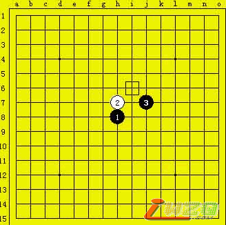
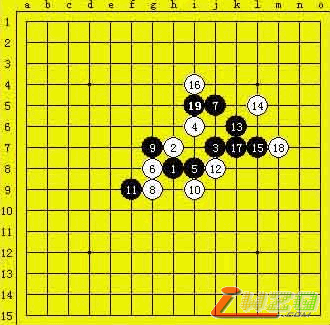
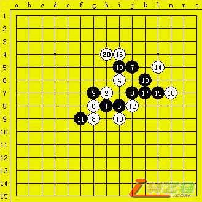
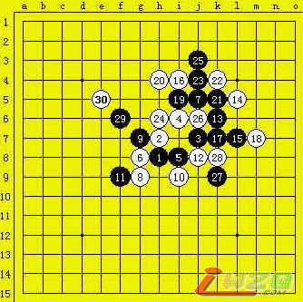
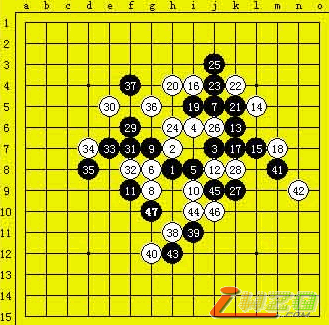

第五届上海名人邀请赛预赛第三轮戈翀宇vs山口釉水直播
#1 第五届上海名人邀请赛预赛第三轮戈翀宇vs山口釉水直播 作者：有志青年 发表时间：2007-5-3 15:39:05
原文地址：http://www.shwzq.com/online/ShowArticle.asp?ArticleID=1302
(19:23) 评论员 许斌 说：大家好
(19:23) 评论员 许斌 说：很荣幸为大家直播A组第三轮的一场比赛，对局双方是山口釉水九段VS戈翀宇六段
(19:24) 评论员 许斌 说：山口开出了残月开局，在最近的研究中，残月已经基本被列为黑必胜开局

(19:25) 评论员 许斌 说：戈翀宇六段提出交换
(19:26) 评论员 许斌 说：戈翀宇两打为G8和I8
(19:32) 评论员 许斌 说
：山口走了实战的这个4
(19:33) 评论员 许斌 说：看来想考一下戈翀宇的基本功,棋手实战经常会考一些复杂的必胜变化.也是对局的策略之一。
(19:37) 评论员 许斌 说：棋局进行到第3轮，对大家来说都已经很关键了
(19:37) 评论员 许斌 说：两个人唯有获胜才有机会出线
(19:40) 评论员 许斌 说：恩，抱歉，现在棋谱已经更正
(19:41) 评论员 许斌 说：山口开始长考了

(19:42) 评论员 许斌 说：利用这个间隙，我向大家介绍下上一轮比赛的结果
(19:43) 评论员 许斌 说：上一轮最后盘结束的是吴昊VS张秩峰的对局，吴昊最后关头读秒拍赢了张秩峰
(19:44) 评论员 许斌 说：曹东在最后几分钟抓了山口一个三三
(19:44) 评论员 许斌 说：刚部宽利用戈翀宇的一个失误奠定胜局
(19:47) 评论员 许斌 说：所以现在山口釉水和戈翀宇都是背水一战的处境
(19:49) 评论员 许斌 说：值得一提的是两位棋手的年龄相仿，又都是防守出色
(19:50) 评论员 许斌 说：戈翀宇六段这几年的状态一直不错，心理素质通过多次比赛得到了很大的提高
(19:54) 评论员 许斌 说：山口经过长考防了20

(19:52) 评论员 许斌 说：其他各组的比赛也在如火如荼地进行中
(19:52) 评论员 许斌 说：刚部宽疏星开局，曹东不交换
(19:54) 评论员 许斌 说：三森在和张轶峰的对局中又一次布了名月开局
(19:56) 评论员 许斌 说：仇云飞斜月开局，矶部未交换，2打，仇云飞13变着
(19:58) 评论员 许斌 说：目前形势是矶部做了一手棋，里面隐含着5步的VCF抓44，现在仇云飞比较窘迫，如果单纯的防御，很可能失去先手
(20:01) 评论员 许斌 说：朱建峰斜月开局，葛凌峰提出交换，目前大家在走一个比较胶着的老变化
(20:03) 评论员 许斌 说：山口数次来上海参加比赛，留给大家最深的印象就是算路极其精准
(20:04) 评论员 许斌 说：尤其是去年屠杀吴镝的那盘棋。。
(20:04) 评论员 许斌 说：令很多在场外观战的棋手叹为观止
(20:05) 评论员 许斌 说：不过这几年里中国棋手的进步是有目共睹的，就在上一轮曹东就很漂亮的砍山口于马下
(20:08) 评论员 许斌 说：戈翀宇仍在长考中
(20:10) 评论员 许斌 说：双方很快的交换了几手

(20:11) 评论员 许斌 说：这一轮已经有一局结束了
(20:12) 评论员 许斌 说：三森赢了张轶峰
(20:15) 评论员 许斌 说：山口局部的算路是非常强的，落子前应该能算清局部所有的变化
(20:15) 评论员 许斌 说：现在戈翀宇继续做棋。
(20:16) 评论员 许斌 说：仇云飞和矶部九段的对局现在邱比较危险
(20:19) 评论员 许斌 说：如果山口和戈翀宇最后下和的话，山口1.5分,戈翀宇1分,最后要看曹东和刚部宽的结果才能决定谁最后出线
(20:19) 评论员 许斌 说：A组可谓是死亡之组
(20:23) 评论员 许斌 说：本次比赛分3个组,每组前2名进上半区,后2名进下半区
(20:24) 评论员 许斌 说：B组的俞满江和吴昊已经率先出线
(20:25) 评论员 许斌 说：现在又有一局结束了
(20:25) 评论员 许斌 说：曹东不负众望,赢了刚部宽
(20:26) 评论员 许斌 说：这样曹东实际上已经出线了
(20:31) 评论员 许斌 说：下到这里，对进攻方的心理是个挑战
(20:32) 评论员 许斌 说：现在为大家直播的是A组第三轮，山口釉水九段VS戈翀宇六段，戈翀宇执黑
(20:33) 评论员 许斌 说：另外几场比赛都处于胶着状态
(20:35) 评论员 许斌 说：目前戈翀宇只有胜利才能出线，形势对他很不利，尤其是面对这样一个算路精准的对手
(20:38) 评论员 许斌 说：双方很快的交换了几手
(20:38) 评论员 许斌 说：时间上山口还有1小时，戈翀宇只有25分钟

(20:41) 评论员 许斌 说：考验双方毅志的时候到了
(20:45) 评论员 许斌 说：一个